클래스와 메서드, 프로퍼티
class
class 는 하나의 스크립트 파일과 대응되는 개념입니다.
클래스 이름
기존에 사용하던 스크립트는 SampleScript 가 클래스 이름입니다.
스크립트 생성

윈도우에서 해당 메뉴를 통해 스크립트 파일을 추가합니다.
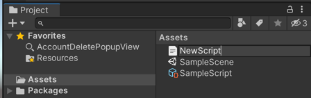 이름으로 생성합니다.
- import { ZepetoScriptBehaviour } from 'ZEPETO.Script' export default class NewScript extends ZepetoScriptBehaviour { Start() { } }
스크립트 이름과 동일하게 라는 이름의 클래스가 생성됩니다.
게임 오브젝트에 스크립트 제거, 추가
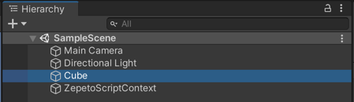 Hierarchy 윈도우에서 Cube 를 선택합니다.
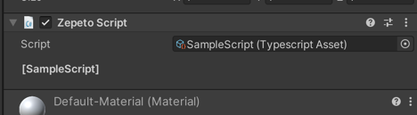 Inspector 윈도우를 보면 처음에 생성된 SampleScript 가 추가되어있는 것을 볼 수 있습니다.
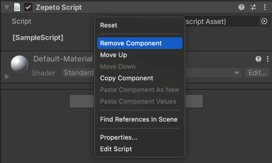 헤더 부분에서 마우스 오른쪽 클릭 후, 메뉴를 클릭하여 해당 스크립트를 제거합니다.
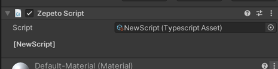 새로 추가한 NewScript를 Inspector 윈도우로 드래그하여 Cube 오브젝트에 추가합니다.
method
Method 는 클래스 내에 선언되어 호출되며, 객체가 수행하는 특정 작업이나 동작을 표현합니다.
메서드 예시
- export default class NewScript extends ZepetoScriptBehaviour { Start() { } }
위 클래스(스크립트)에서 Start 는 메서드 입니다.
- Start() { console.log("log"); }
console.log 는 console 클래스의 log 라는 이름의 메서드입니다.
메서드 추가, 호출
- import { ZepetoScriptBehaviour } from 'ZEPETO.Script' export default class NewScript extends ZepetoScriptBehaviour { Start() { } NewMethod() { console.log("This is new method."); } }
NewMethod 라는 이름의 메서드를 추가합니다.
- import { ZepetoScriptBehaviour } from 'ZEPETO.Script' export default class NewScript extends ZepetoScriptBehaviour { Start() { this.NewMethod(); } NewMethod() { console.log("This is new method."); } }
this.[메서드 이름] 으로 메서드를 호출할 수 있습니다.
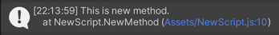 결과 출력.
메서드 파라미터 (매개변수)
메서드에는 파라미터를 전달할 수 있습니다.
- import { ZepetoScriptBehaviour } from 'ZEPETO.Script' export default class NewScript extends ZepetoScriptBehaviour { Start() { } Sum(a: number, b: number) { console.log(`a + b = ${a + b}`); } }
파라미터는 메서드를 선언할 때, 괄호 안에 추가하여 코드 블록 내부에서 사용할 수 있습니다.
- import { ZepetoScriptBehaviour } from 'ZEPETO.Script' export default class NewScript extends ZepetoScriptBehaviour { Start() { var a: number = 10; var b: number = 5; this.Sum(a, b); } Sum(a: number, b: number) { console.log(`a + b = ${a + b}`); } }
파라미터는 메서드를 호출할 때, 전달합니다.
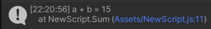 결과 출력.
메서드 반환값
메서드에는 반환값을 반환할 수 있습니다.
- import { ZepetoScriptBehaviour } from 'ZEPETO.Script' export default class NewScript extends ZepetoScriptBehaviour { Start() { var a: number = 10; var b: number = 5; this.Sum(a, b); } Sum(a: number, b: number) { console.log(`a + b = ${a + b}`); } ReturnSum(a: number, b: number): number { return a + b; } }
메서드를 선언할 때, 괄호 뒤에 타입을 명시해주면, 해당 타입의 값을 반환할 수 있습니다.
- import { ZepetoScriptBehaviour } from 'ZEPETO.Script' export default class NewScript extends ZepetoScriptBehaviour { Start() { var a: number = 10; var b: number = 5; this.Sum(a, b); var sum = this.ReturnSum(a, b); console.log(`sum = ${sum}`); } Sum(a: number, b: number) { console.log(`a + b = ${a + b}`); } ReturnSum(a: number, b: number): number { return a + b; } }
return 을 통해 결과를 반환합니다.
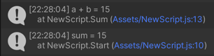 결과 출력.
property
Property 는 클래스 내에 선언되는 변수이며, 객체의 상태를 표현합니다.
변수의 한계
- import { ZepetoScriptBehaviour } from 'ZEPETO.Script' export default class NewScript extends ZepetoScriptBehaviour { Start() { var a: number = 10; var b: number = 5; this.Sum(); } Sum() { console.log(`a + b = ${a + b}`); } }
Start 메서드 안에 선언된 변수 a, b 는 Start 메서드 내부에서만 사용이 가능하고, Sum 메서드 내부에서는 사용이 불가능합니다.
프로퍼티 추가, 사용
- import { ZepetoScriptBehaviour } from 'ZEPETO.Script' export default class NewScript extends ZepetoScriptBehaviour { count: number = 0; Start() { } }
Property 는 클래스 내부에서 선언된 변수 입니다.
[프로퍼티 이름]: [프로퍼티 타입] = [초기값]; 형태로 선언됩니다.
- import { ZepetoScriptBehaviour } from 'ZEPETO.Script' export default class NewScript extends ZepetoScriptBehaviour { count: number = 0; Start() { for (var i:number = 0; i < 5; i = i + 1) { this.AddCount(); console.log(`count is ${this.count}.`) } } AddCount() { this.count = this.count + 1; } }
프로퍼티 역시 this. 와 함께 사용되며, 모든 메서드에서 사용 가능한 변수의 역할을 합니다.
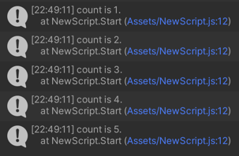 결과 출력.
접근자
- import { ZepetoScriptBehaviour } from 'ZEPETO.Script' export default class NewScript extends ZepetoScriptBehaviour { public startCount: number = 0; private count: number = 0; Start() { this.count = this.startCount; console.log(`startCount is ${this.startCount}.`); for (var i:number = 0; i < 5; i = i + 1) { this.AddCount(); console.log(`count is ${this.count}.`) } } AddCount() { this.count = this.count + 1; } }
프로퍼티를 선언할 때, 앞에 public 이나 private 을 붙여서 선언할 수 있습니다.
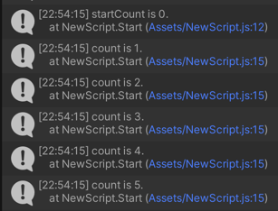 중간 결과 출력.
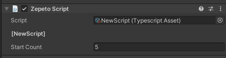 Inspector 윈도우에서 public 으로 선언한 프로퍼티는 값을 설정할 수 있는 유아이가 추가됩니다.
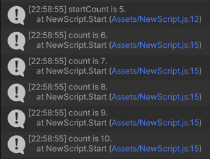 Inspector 윈도우에서 변경한 값이 스크립트에서 초기값으로 선언한 값보다 우선 적용되어 실행됩니다.